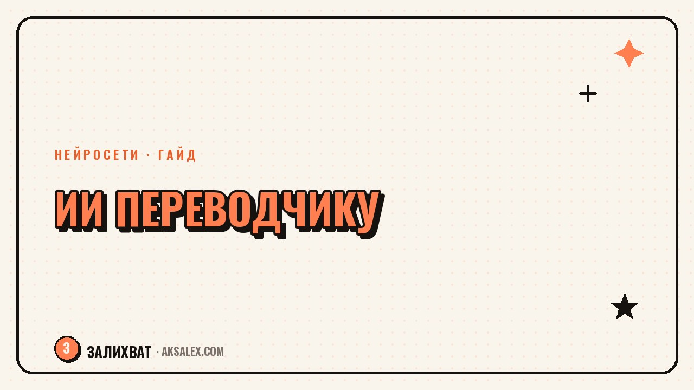

Нейросети для переводчика: текст, видео и субтитры

Переводчик сегодня работает не только со словом, но и с видео, подкастами и субтитрами - клиенты хотят получить готовый ролик на другом языке, а не только текстовый файл. Нейросети закрывают черновую часть этой работы быстро, но не одинаково хорошо во всех задачах. Разберём, где ИИ реально экономит часы, а где без переводчика с опытом результат стыдно показывать заказчику.
Перевод текста: где нейросеть справляется сама
Для бытовых и деловых текстов без узкой терминологии нейросетевой перевод давно обгоняет по скорости ручную работу. DeepL и Google Translate строят перевод с учётом контекста всего предложения, а не слова за словом, поэтому результат читается связно и почти не требует правок на простых текстах - письмах, описаниях товаров, общих статьях.
Сложнее с юридическими, медицинскими и техническими текстами, где одно неверно подобранное слово меняет смысл документа. Здесь нейросеть даёт быстрый черновик, но финальную вычитку должен делать переводчик, который понимает предметную область и знает, где термин имеет юридические последствия.
Когда доверять переводу без правки
- Личная переписка и бытовые письма
- Черновой перевод для внутреннего понимания смысла документа
- Простые описания товаров и карточки на маркетплейсах
- Общие новостные и блоговые тексты без узкой терминологии
Видео на другом языке: озвучка и дубляж нейросетью
Отдельное направление - перевод видео с сохранением голоса спикера. Сервисы вроде HeyGen и ElevenLabs умеют клонировать интонацию оригинального голоса и накладывать её на переведённую речь, включая синхронизацию движения губ под новый язык. Для образовательных роликов, лекций и корпоративных презентаций это заменяет студийную озвучку на нескольких языках сразу.
Слабое место таких сервисов - эмоции и юмор. Шутка, построенная на игре слов конкретного языка, при дословном переводе теряет смысл, а нейросеть этого не замечает - она переводит текст, а не культурный контекст. Поэтому сценарий для озвучки лучше сначала адаптировать переводчиком-человеком, а потом уже прогонять через голосовую нейросеть.
Нейросеть переводит слова точно, но культурный контекст и юмор всё ещё держатся на переводчике-человеке. Это как раз та часть работы, которую алгоритм не видит, потому что она не в тексте, а между строк.
Субтитры: автоматическая генерация и разбор ошибок
Автоматические субтитры - самая зрелая часть ИИ-перевода на сегодня. Whisper от OpenAI и встроенные инструменты YouTube распознают речь и переводят её с точностью, достаточной для большинства роликов без специфического жаргона. Это экономит часы ручной расшифровки, особенно на длинных интервью и подкастах.
Типичные ошибки автоматических субтитров
- Путают омонимы и созвучные слова при плохом качестве звука
- Не расставляют знаки препинания там, где меняется смысл фразы
- Теряют имена собственные и названия брендов, которых нет в словаре модели
- Плохо справляются с несколькими говорящими одновременно
Поэтому автоматические субтитры стоит рассматривать как черновик для быстрой публикации, а финальную версию для официального ролика или курса - проверять вручную построчно, особенно там, где встречаются имена, цифры и профессиональные термины.
Сравнение инструментов по задачам
Ниже сводная таблица, какой инструмент под какую задачу переводчика ставить в первую очередь.
| Инструмент | Задача | Формат доступа |
|---|---|---|
| DeepL | Перевод текста с учётом контекста | Бесплатный тариф + платная подписка |
| Google Translate | Быстрый перевод, много языков | Бесплатно |
| Whisper (OpenAI) | Расшифровка и перевод речи в субтитры | Открытая модель, бесплатно при своём запуске |
| HeyGen | Дубляж видео с сохранением голоса и губ | Платная подписка |
| ElevenLabs | Синтез и клонирование голоса для озвучки | Есть бесплатный лимит, дальше подписка |
Как встроить нейросети в рабочий процесс переводчика
Рабочая схема - разделить проект на этапы и решить, на каком из них ИИ действительно экономит время, а не создаёт лишнюю проверку. На практике это выглядит так.
- Шаг 1. Прогони исходный текст или аудио через нейросеть для чернового перевода или расшифровки
- Шаг 2. Вычитай черновик на предмет терминологии, имён и цифр - это самые частые точки ошибок
- Шаг 3. Для видео - адаптируй шутки и культурные отсылки вручную до озвучки
- Шаг 4. Прогони финальный текст через голосовую нейросеть или экспортируй субтитры
- Шаг 5. Проверь синхронизацию звука и текста на финальном ролике перед сдачей
Такой порядок сохраняет скорость работы с нейросетью, но не отдаёт ей решения там, где нужен живой человек с пониманием контекста и ответственностью за качество перед клиентом.
Конфиденциальность и работа с чужими данными
Отдельный вопрос - куда уходит текст, который загружают в онлайн-переводчик. Многие бесплатные сервисы используют введённые данные для обучения моделей, и это критично для договоров, медицинских документов и любой информации под соглашением о неразглашении.
Для конфиденциальных материалов стоит смотреть на тарифы с явным отказом от использования данных для обучения или на локальные модели, которые работают без отправки текста на сторонний сервер. Это дороже и медленнее, но избавляет от риска утечки чужих коммерческих данных через бесплатный инструмент.
Частые вопросы
Заменит ли нейросеть профессию переводчика?
Полностью нет, потому что культурный контекст, юмор и юридическая ответственность за точность документа остаются на человеке. Нейросеть берёт на себя черновой перевод и рутинную расшифровку, освобождая время на сложные и ответственные части работы.
Можно ли доверять автоматическим субтитрам YouTube без проверки?
Для быстрой публикации ролика для широкой аудитории - да, качества обычно достаточно. Для официального курса, интервью с именами и терминами лучше пройтись по субтитрам вручную, потому что автоматика путает омонимы и теряет собственные имена.
Какая нейросеть лучше переводит с сохранением голоса в видео?
Хорошо себя показывают HeyGen и ElevenLabs - они клонируют интонацию оригинала и синхронизируют движение губ под новый язык. Выбор зависит от бюджета и от того, нужна ли полная замена видеоряда под новый язык.
Безопасно ли переводить рабочие документы через бесплатные онлайн-сервисы?
Не для конфиденциальных данных - многие бесплатные переводчики используют введённый текст для обучения моделей. Для договоров и коммерческой информации стоит выбирать тарифы с гарантией неиспользования данных или локальные инструменты.
С какого инструмента начать переводчику, если раньше не пользовался нейросетями?
Проще всего начать с DeepL для текста - он бесплатен на базовом уровне и заметно точнее старых переводчиков. Уже после этого можно пробовать Whisper для субтитров, если в работе есть аудио и видео.
Раз тема оказалась полезной, вот что почитать следующим. Обработка и генерация: какие нейросети стоит поставить фотографу уже сейчас.
Читать статью →а не вручную